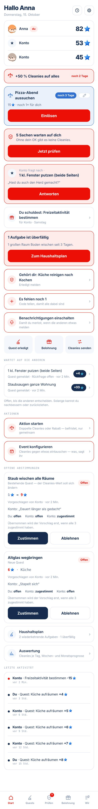

Die Startseite ist mit jeder neuen Funktion ein Stück länger geworden: jede hat ihren eigenen Kasten mitgebracht, mit eigener roter Umrandung und eigenem Knopf. Einzeln war das jedes Mal richtig — zusammen ist es zu viel. Hier stehen drei Vorschläge, wie sie aussehen könnte, jeweils angelehnt an Apps, die das schon gut lösen. Alle drei zeigen denselben vollen Tag wie das Vorher-Bild, und alle drei passen auf einen Bildschirm.
Die Telefone sind keine Bilder — man kann sie anfassen. Abhaken, wischen, aufklappen: genau das, was sich „lebendig“ statt „statisch“ anfühlen soll, lässt sich nur so beurteilen.
Das ist die echte App, aufgenommen in einer Dreier-WG mit dem, was an einem normalen Tag zusammenkommt: drei Meldungen zum Prüfen, eine Rückfrage, eine überfällige Aufgabe, eine eigene, zwei Abstimmungen, ein Event, eine Aktion. Im Telefon lässt sich scrollen.

Echte Aufnahme, 390 × 844 wie ein iPhone 14. Ganz unten, nach dreieinhalb Bildschirmen, kommt „Letzte Aktivität“.
Unten in der Leiste sitzt bei allen dreien ein Plus — „Quest erledigt“ ist das, was man am häufigsten tut, und es soll von jedem Schirm aus ein Tipp sein. Der Reiter „Prüfen“ geht dafür in der Startseite auf: was dort stand, steht jetzt hier, nur kompakter.
Alles, was auf dich wartet, in einer Liste — nach Dringlichkeit, eine Zeile pro Sache. Abhaken direkt in der Zeile oder wischen: nach rechts zustimmen, nach links nachfragen. Was nicht dringend ist, klappt zu.
Eine Sache nach der anderen, groß und mit zwei klaren Knöpfen. Wischen geht auch: rechts heißt ja, links heißt nachfragen. Am Ende steht „Alles erledigt“ — das ist ein kleiner Moment, auf den man hinarbeitet.
Ein Raster aus Kacheln, jede eine Zahl und ein Satz. Tippen öffnet das Blatt mit den Einzelheiten. Alles passt auf einen Blick, nichts drängelt.
Unabhängig von der Variante: Diese Bausteine machen den größten Teil des Unterschieds aus, und jeder ist von einer App abgeschaut, die man vermutlich schon benutzt.
| Baustein | Heute | Neu | Vorbild |
|---|---|---|---|
| Kontostand | große Karte, eine Zeile pro Person | eine dunkle Leiste: deiner groß, die anderen klein daneben | Revolut, Apple Wallet |
| Quest erledigt | Kachel mitten auf der Startseite | Plus in der Mitte der Leiste — von jedem Schirm aus ein Tipp | Instagram, Things |
| Was zu tun ist | bis zu neun eigene Kästen, jeder mit Knopf | eine Sammlung, nach Dringlichkeit geordnet | Todoist „Heute“ |
| Entscheiden | Karte öffnen, dann Knopf | direkt abhaken oder wischen: rechts ja, links nachfragen | Apple Mail, Gmail |
| Läuft gerade | je eine große Karte für Aktion, Event, Urlaub | schmale Pillen in einer Reihe, seitlich wischbar | Instagram-Stories |
| Abstimmungen | doppelt: im Zähler und als große Karten | einmal, zwischen den anderen Sachen | — |
| Haushaltsplan | dreimal an drei Stellen | einmal | — |
| Letzte Aktivität | sechs Einträge, 385 px, ganz unten | eine Zeile „Zuletzt …“, der Rest hinter dem Uhr-Symbol | Banking-Apps |
| Rot | neun rote Elemente | nur noch, was wirklich brennt: überfällig, nicht geliefert | iOS: Rot heißt dringend |
| Einmal-Hinweise | „Benachrichtigungen“, „Es fehlen noch“ — jeden Tag wieder | einmal zeigen, wegwischen, weg | Tipps in iOS |
| Nichts zu tun | der Kasten verschwindet einfach | „Alles erledigt“ mit kleinem Jubel | Inbox Zero, Things |
Moderne Apps holen sich ihre Nutzungszeit oft über kleine Ziele und Serien, am bekanntesten Duolingo. Für einen Haushalt kann das gut wirken — gerade bei Kindern —, es kann sich aber auch nach Druck anfühlen. Deshalb getrennt von den drei Vorschlägen und abschaltbar. So sähe es oben auf der Startseite aus:
Mein Rat: wenn, dann das gemeinsame Wochenziel. Es zieht alle in dieselbe Richtung. Die Serie belohnt den Einzelnen, die Wertung stellt Leute gegeneinander — beides kann in einer WG schnell kippen.
A ist für den Alltag am praktischsten: man sieht alles, und eine einzelne Sache ist mit einem Tipp oder Wisch erledigt. Wenn sich viel angesammelt hat, öffnet „Alle durchgehen“ den Stapel aus B — dann geht es Karte für Karte, groß und schnell. C sieht am ordentlichsten aus, kostet aber für jede Kleinigkeit einen Tipp mehr; für „einfach und praktisch“ ist das der falsche Tausch.